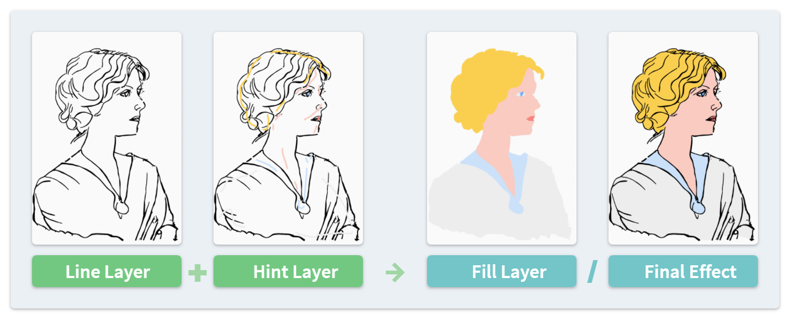

Smart Fill #
Smart Fill is an operator in the Draw mode. It fills an entire line art layer based on some color hints marked by the user. Compared with the Blender's default Fill tool, it has the following advantages:
- It handles the gaps in the line art automatically.
- It is less likely to leave seams near the contour, or be intersected.

Although the algorithms are different, the concept of this operation is similar to the Colorize Mask tool in Krita.
From Sidebar Panel #
Smart Fill can be accessed from the button in the sidebar panel. This method requires the user to draw color hints as strokes.
Input/Output Layers #
The operation takes two input layers, one containing the line art (Line Layer), and the other containing the color hint strokes (Hint Layer). They must be distinct layers.
The operation then generates new strokes in an output layer (Fill Layer). It is possible, but not recommended to use the same layer as Fill and Hint, since it will be difficult to distinguish the output strokes from the input ones. To overcome it, there is an option specifying to use only Boundary Strokes / Fill Guides as hints.
Hint Strokes #
Points in the hint strokes will force the nearby areas be filled with the same color. The color of a hint point is determined in the following way:
- If the stroke/point has a vertex color, use it as hint. Otherwise, use its material color.
- If the stroke has its fill visible, use the fill color as hint. Otherwise, use the line color.
Only the position and color of the hint strokes have an impact. Other point/stroke attributes, including the line thickness and strength will not affect the result.
You can use fill materials for the hint strokes. But only its contour points will be taken into account. The inner part has no effect.
Output Materials #
There are different ways to assign materials to the newly generated fill strokes:
- Use the same materials (and vertex colors if exist) as hint strokes.
- Use an existing material. Generate vertex fill colors for each stroke.
- For each color used as hints, generate a new material.
If you tend to use existing materials, please make sure they are not line-only ones.
From Toolbar #
Smart Fill can also be used as a tool in the Draw mode, as an alternative of Blender's native Fill tool. It allows the user to fill an area will mouse clicks:
- Left Click: Specifies an area to fill.
- Right Click: Specifies an area not to fill.
- Enter: Confirms the current results and exits the tool.
- ESC: Cancels the operation and exits the tool.
In addition, mouse middle and side buttons can be assigned to Confirm or Cancel in Preferences.
The tool generates fill strokes in the active layer. By default, it also analyzes the line art in the same layer, while a more common way is to specify another layer as the line art in the topbar's option.
Currently, the tool does not support multiframe fill. In order to fill multiple frames at the same time, please use the sidebar method with hint strokes.
Please notice that Smart Fill may react slowly when the line art contains a large number of points. In this case, it is recommended to save your file before using this tool.
(The example image used in this page is Portrait of Olga by Pablo Picasso in 1920.)